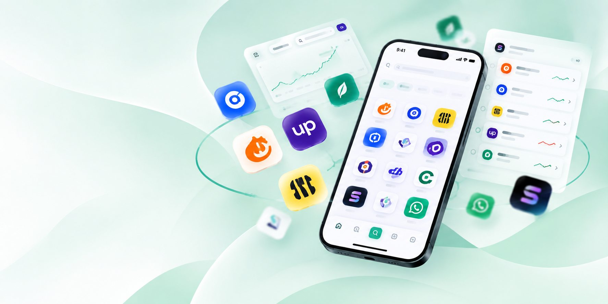

01
Account Centre & Developer API Console
A dedicated web product where users manage their profile, reports and corporate actions, and where third-party developers manage the integrations they build on Upstox’s trading infrastructure.
- the problem
- Developers subscribing to API plans had no coherent self-serve experience to manage their apps, track billing, or test integrations before committing.
- what I did
- I owned UI design and final production screens for Account Centre and the Developer API Console: every screen, state, and interaction detail that shipped.
- where it ended
- The Developer API Console enabled Upstox to launch paid API plans with a self-serve subscription and management experience. The SEBI login compliance was delivered ahead of the September 2022 deadline.
Overview
Upstox is one of India’s largest retail stock broking platforms, with 10M+ registered users and ~3M active traders at the time of this project. Account Centre was a dedicated web product — separate from the main trading app — where users could manage their profile, view financial reports, handle corporate actions, and for developer users, manage their API integrations and subscriptions.
I was initially brought on to design the billing section within Account Centre. As the scope expanded, I took over full UI ownership of the Developer API Console — the end-to-end interface through which third-party developers build on top of Upstox’s trading infrastructure.
My role
I owned UI design and final production screens for Account Centre and the Developer API Console — every screen, state, and interaction detail that shipped. The underlying UX flows and stakeholder-facing product decisions were handled separately; my part began once those directions were set, translating them into shell architecture, componentry, and pixel-perfect screens ready for engineering handoff.
The problem
Upstox’s developer-facing API product was growing, but the tooling around it hadn’t kept pace. Developers subscribing to API plans (Interactive at ₹499/mo, Historical at ₹499/mo, Combined at ₹899/mo) had no coherent self-serve experience to manage their apps, track billing, or test integrations before committing. Separately, a SEBI compliance circular mandated changes to the API login mechanism by September 2022, requiring both a knowledge factor (PIN/password) and a possession factor (OTP via SMS + email) — the existing flow only had the former.
The broader Account Centre also lacked a proper responsive foundation, with nothing designed to work coherently across mobile, tablet, and desktop with consistent states.
Design approach
The first thing I established before touching any product screen was the shell — the structural and behavioural foundation everything else would sit on. This meant defining:
- Loading, error, and empty states for every page and sub-section, both mobile and desktop
- 404 and server error gates
- Grid systems — SM columns for mobile/tablet (up to 1024px), LG columns for desktop (1016px content width)
- Navigation architecture — top bar behaviour on home vs child pages, scroll-pinning rules, tab bar collapse on scroll, account dropdown context menu
- Alert and toast placement rules, inherited from the DS but adapted for this product’s specific constraints
That upfront work made handoff clean and prevented engineers from making layout decisions themselves. Every edge case had a defined answer before a single product screen was built.
With the shell established, I designed the full Account Centre UI across its three primary tabs — Profile, Reports, and Corporate Actions — before moving into the Developer API Console, which became the most complex and technically nuanced section of the project.
Developer API Console
For the Developer API Console, the key areas I worked through were:
App lifecycle management
Developers needed to create apps, subscribe to plans, and track the payment status of those subscriptions. Working within the async handling logic defined for the underlying limit deduction API (response time anywhere from 5 seconds to 2 minutes), I designed the UI for the post-confirmation in-progress state — apps surfaced with a “creation in progress” status, transitioning to a success screen (API key + secret) or a failure screen (retry and delete options).
Billing and wallet flow
Plan charges were deducted from the user’s Upstox wallet. If insufficient funds were available, the flow redirected users to a pre-filled add funds experience. I designed both the happy path and the insufficient funds screens, keeping developers in context throughout.
Sandbox environment
To increase API adoption, a sandbox mode was needed so developers could test integrations without real funds or a live account. I designed the sandbox as a parallel environment within the console, with clear visual differentiation from the live environment to prevent accidental production actions.
SEBI compliance login
The existing API login (UCC + password + year of birth) needed OTP-based possession factor authentication added. I designed the updated login screens incorporating mobile number + OTP + PIN, meeting the regulatory deadline while keeping the experience frictionless for developers who log in frequently.
What I paid attention to
The developer audience is different from a retail trader. They’re technical, they’re impatient with friction, and they will read error states. So every failed state — app creation failed, insufficient funds, API key load error — was written and designed with precision. Specific copy, a clear recovery action, an explicit next step.
The responsive shell also mattered here more than in most internal tools, because developers access consoles across environments — a MacBook in an office, a phone on the go checking subscription status. The grid system and navigation architecture I built ensured the experience held up across every viewport.
Outcome
The Account Centre shipped as a unified web product replacing fragmented legacy account management pages. The Developer API Console enabled Upstox to launch paid API plans with a self-serve subscription and management experience. The SEBI login compliance was delivered ahead of the September 2022 deadline.
02
Invest Logos
Upstox — India’s Robinhood-equivalent, 10M+ users — 2022

- the gap
- Neither NSE nor BSE provide logos for listed companies. Every major Indian trading app, including Zerodha, showed stocks as plain text: ticker and name only.
- what I did
- Owned the design side: the spec, running production, and the team doing the work.
- the result
- About 2,180 stock and mutual fund logos, SVG/vector, shipped in Upstox Lite mode.
Neither NSE nor BSE provide logos for listed companies. Every major Indian trading app, including Zerodha, showed stocks as plain text — ticker and name only. When Upstox built a simplified Lite mode for first-time investors, the team added logos for individual stocks. No other Indian platform had done this before.
Role
Owned the design side — the spec, running production, and the team doing the work.
Spec
Wrote the guideline: visual style, a legibility bar for how logos read at small sizes, fallback treatment for companies with no usable mark to work from, a naming convention, and SVG/vector as the required output format.
Team and process
Five to ten designers, mostly juniors and incoming interns. Target was 5–10 logos per person per day. Sessions were short 15–30 minute calls, more like a catch-up than an assigned task — people talked while getting the day’s logos done, and mentoring happened naturally in that setting.
Handoff
Finished logos went to a backend engineer, who wired them into the app via pull request as batches cleared review. Major companies were done first; the rest were completed over a longer stretch afterward, at lower priority, alongside other work.
Result
About 2,180 stock and mutual fund logos, SVG/vector, shipped in Upstox Lite mode.